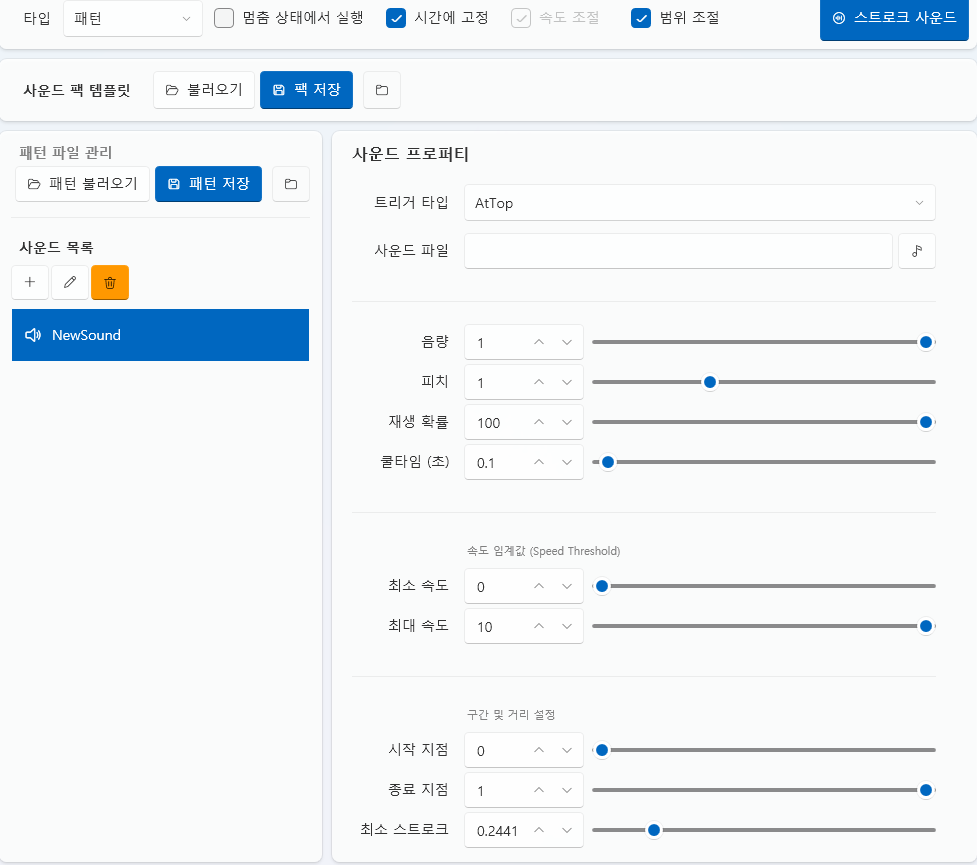

ストロークタブ（Stroke Tab）¶
ストロークタブは、デバイス動作（モーション）パターンを設計・制御する編集タブです。
各軸（Axis）の動きを時間単位で制御し、
振動・回転・往復などの物理的なパターンを構築することができます。
すべてのストロークデータは プロジェクト内部（Asset/Stroke/） に保存され、
外部フォーマット（.funscript）との互換インポート / エクスポートに対応しています。
1. 基本インターフェース¶

| 項目 | 説明 |
|---|---|
| ① インポート | 保存されたストローク（.stroke）ファイルを読み込みます。 |
| ② 新規作成 | 新しいストロークパターンを作成します。 |
| ③ 編集 ✏️ | 選択したストロークの詳細編集ウィンドウを開きます。 |
| ④ 削除 🗑️ | 選択したストロークをプロジェクトから削除します。 |
| ⑤ フォルダを開く 📂 | Asset/Stroke/ フォルダを直接開きます。 |
💡 補足：
ストロークタブの基本構造は Live2D タブと同様で、
「動作アクション」リストにパターンを追加・編集することができます。
2. ストロークエディター¶
「新規作成」または「編集」ボタンをクリックすると、
Stroke Editor（ストロークエディター） ウィンドウが開きます。
ここで各軸の動き、速度、範囲などを直接調整できます。

🎛️ 上部パネル¶
| 項目 | 説明 |
|---|---|
| 名前 | 現在のストロークパターンの名前を設定します。 |
| タイプ | ストロークの実行方式を選択します。 |
| 時間固定 | 全体の再生時間を一定に保ちます。 |
| 速度調整 | 再生速度を変数に追従させるかを設定します。 |
| 振幅調整 | 軸の最大振れ幅を変数に追従させるかを設定します。 |
| 軸タイプ | 「シングル軸」「単一回転軸」「複数回転軸」から選択します。 |
| 長さ | パターン全体の長さをミリ秒（ms）単位で指定します。 |
| スケール(%) | プレビュー画面の表示倍率を調整します。 |
🧰 ツールバー¶
エディター上部には、主要な編集ツールバーが配置されています。
各アイコンをクリックしてツールを切り替えることができ、ショートカットキーにも対応しています。

| アイコン | 名称 | ショートカット | 説明 |
|---|---|---|---|
| 📂 | インポート | — | 外部 .funscript ファイルを読み込みます。 |
| 💾 | エクスポート | — | 現在のパターンを .funscript 形式で保存します。 |
| ⬜ | 選択ツール | — | ポイントまたは領域を選択します（基本ツール）。 |
| ✥ | 移動ツール | M | 選択中のポイントやグラフを移動します。 |
| 🗑️ | 削除 | Del | 選択したポイントを削除します。 |
| ✂️ | トリム | — | 選択範囲のみを残し、それ以外を削除します。 |
| ➕ | ポイント追加 | — | クリックした箇所に新しいポイントを追加します。 |
| ⏺️ | 録画（未対応） | — | 実際のデバイス入力をもとにモーションを記録します（現在無効）。 |
💡 ヒント：
ツールはショートカットキーで即座に切り替え可能です。
例：Mキーで移動ツール、Sキーで選択ツールへ戻す。⚙️ 補足：
.funscriptは広く利用されているオープンモーション形式で、
多くの外部デバイスやソフトウェアと互換性があります。
🩰 軸（Axis）の管理¶
左側の軸リスト（L0〜R2）は実際のデバイスの軸を示します。
チェックが入っている軸のみ、編集および再生に反映されます。
| 軸名 | 説明 |
|---|---|
| L0〜L2 | 左チャンネルに対応する軸。 |
| R0〜R2 | 右チャンネルに対応する軸。 |
| 有効チェック | 軸をタイムラインに表示するかを切り替えます。 |
🧩 グラフ & タイムライン¶
中央のグラフエリアでは、各軸の動きを時間軸上で視覚的に確認できます。
横軸は時間（ms）、縦軸は位置（0〜100%）を表し、
ポイントを繋ぐことでモーションカーブを構成します。
- 横軸（Time）: 時間経過（ms 単位）
- 縦軸（Value）: 軸の相対位置（0〜100%）
- グリッド線（Grid）: 補助線として時間と値を区別
- ポイント（Point）: 各時点の位置を示す編集可能な点
🎯 グラフ操作¶
グラフエリアは静的編集インターフェースであり、
再生機能やズーム機能はなく、ポイント操作を中心に編集します。
| 操作 | 説明 |
|---|---|
| 選択ツール | クリックまたはドラッグでポイントを選択します。 |
| 移動ツール | 選択したポイントをドラッグして位置を変更します。 |
| ポイント追加 | クリックで新しいポイントを追加します。 |
| 削除 | Deleteキーで選択ポイントを削除します。 |
| トリム | 選択範囲のみ残して他を削除します。 |
💡 補足：
Stroke Editor は再生機能を持たない静的パターンエディターです。
実際の動作再生は Stroke Player で行われます。
🗺️ ミニマップ（Minimap）¶
グラフ下部には、全体のストロークパターンを縮小表示するミニマップがあります。
現在の表示範囲は白枠で示され、クリックでその範囲へジャンプできます。
| 機能 | 説明 |
|---|---|
| ビュー移動 | ミニマップをクリックして該当位置へ移動。 |
| 表示範囲 | 白い矩形で現在の表示領域を示します。 |
| 全体確認 | パターン全体の構成を一目で確認可能。 |
💡 ヒント：
ミニマップは長いパターンを編集する際に便利で、
すばやく特定の区間へ移動できます。
3. ストロークタイプ¶
ストロークの挙動はタイプ（Type）設定によって異なります。
以下の4種類のタイプで、さまざまな制御方式を実現できます。
3.1 パターン（Pattern）¶
時間ベースで自動再生される一般的なストロークです。
タイムラインに配置、またはスクリプトから実行できます。
| 特徴 | 説明 |
|---|---|
| 自動再生 | タイムライン上で指定時間自動的に実行。 |
| 速度 / 振幅調整 | 「速度調整」「範囲調整」オプションで変更可能。 |
| ループ再生 | スクリプト設定で繰り返し再生が可能。 |
3.2 手動実行（Manual）¶
Spaceキーを押すたびに1回再生されます。
直接操作やインタラクティブなイベントに最適です。
| 項目 | 説明 |
|---|---|
| 1回再生 | キー入力のたびに1サイクル再生。 |
3.3 マウス制御（Mouse Control）¶
マウスの動きをリアルタイムに追従して軸を制御します。
L0は縦方向、R0は横方向の動きに反応します。
| 項目 | 説明 |
|---|---|
| L0軸 | マウスの上下動に追従。 |
| R0軸 | マウスの左右動に追従。 |
| リアルタイム制御 | 現在のマウス位置を即時反映。 |
3.4 カウントダウン（Countdown）¶
カウントダウンタイプは、射精段階（Progress）とカウンター（Counter）の
相互作用に基づいてパターンの速度や形状を動的に調整する高機能モードです。

| 項目 | 説明 |
|---|---|
| 0〜10段階ボタン | 各カウンター段階ごとに使用するパターンを指定。 |
| パターン設定パネル | カウンター値と射精段階に応じて動作を設定。 |
| リセットボタン | 左上のリセットでパターンを初期化。 |
| パネルグラフ | 横軸＝カウンター、縦軸＝射精段階。セルの値はパターン番号を示す。左クリックで増加、右クリックで減少。 |
| カウント音設定 | 各カウント時に再生する音声を設定。 |
⚙️ 速度補正（Penalty Speed）¶
| 項目 | 説明 |
|---|---|
| 最大速度補正 | カウンターが射精段階より小さいほど速度が加速。 |
| 最小速度補正 | カウンターが射精段階に近いほど速度が減速。 |
💡 例
- カウンター = 1、射精段階 = 10 → 速度 最大加速
- カウンター = 10、射精段階 = 1 → 速度 最小減速
4. スクリプト連携¶
| コマンド | 説明 |
|---|---|
| StrokeExec | 指定時間、特定のストロークを再生します。 |
💡 ヒント：
ストロークはタイムラインへドラッグして配置でき、
他のリソース（サウンド、Live2Dなど）と同期再生可能です。
5. ファイル構造¶
| 項目 | パス |
|---|---|
| ストロークデータ | Asset/Stroke/StrokeName.stroke |
| プレビューキャッシュ | Asset/Stroke/ |
⚙️ 注意：
ストロークデータはプロジェクト専用です。
ファイルを移動またはリネームすると、
タイムラインリンクが動作しない可能性があります。
6. ストロークサウンド設定¶
ストロークタブでは、モーション（ストローク）にサウンドを連動させることができます。
ストロークの位置・速度・範囲に応じて、
リズミカルな効果音やインタラクティブなサウンドを再生できます。

🔊 サウンドパックテンプレート¶
| 項目 | 説明 |
|---|---|
| 読み込み | 保存済みのサウンドパックテンプレートを読み込みます。 |
| パック保存 | 現在のサウンド構成をサウンドパックとして保存します。 |
📁 パターンファイル管理¶
| 項目 | 説明 |
|---|---|
| パターン読み込み | 保存されたサウンドパターンを読み込みます。 |
| パターン保存 | 現在のサウンドパターンを保存します。 |
📃 サウンド一覧¶
左側のパネルには、現在のストロークに関連付けられた
サウンド一覧 が表示されます。
| ボタン | 説明 |
|---|---|
| ➕ 追加 | 新しいサウンドを追加します。 |
| ✏️ 編集 | 選択中のサウンドを編集します。 |
| 🗑️ 削除 | 選択中のサウンドを削除します。 |
6.1 サウンドプロパティ¶
サウンド一覧から項目を選択すると、
右側に サウンドプロパティ パネルが表示されます。
🎯 基本設定¶
| 項目 | 説明 |
|---|---|
| トリガータイプ | サウンドが再生される条件 (Continuous, AtTop, AtBottom, MovingUp, MovingDown など) |
| サウンドファイル | 再生するサウンドファイル一覧（複数指定可） |
| 音量 | サウンドの出力音量 |
| ピッチ | サウンドの再生ピッチ |
| 再生確率 | サウンドが再生される確率（%） |
| クールタイム（秒） | 次に再生できるまでの最小待機時間 |
💡 複数のサウンドを登録した場合、
再生時にランダムで1つが選択されます。
⚡ 速度しきい値（Speed Threshold）¶
ストロークの 速度 によってサウンド再生を制御します。
| 項目 | 説明 |
|---|---|
| 最小速度 | この値以上の速度でのみサウンドが再生されます。 |
| 最大速度 | この値を超えるとサウンドは再生されません。 |
💡 高速なストローク時のみ効果音を出したい場合に便利です。
📏 範囲・距離設定¶
ストロークの 位置範囲 と 最小移動量 に基づいて
サウンド再生を制御します。
| 項目 | 説明 |
|---|---|
| 開始位置 | サウンドが有効となる開始範囲 |
| 終了位置 | サウンドが有効となる終了範囲 |
| 最小ストローク | サウンド再生に必要な最小移動距離 |
💡 微小な動きによる不要なサウンド再生を防止できます。
🔄 動作フロー例¶
- ストロークが実行される
- 設定された トリガータイプ に到達
- 速度 / 位置 / 最小ストローク条件を判定
- 再生確率をチェック
- 条件を満たした場合サウンドを再生
- クールタイム中は再生を制限
6.2 活用ヒント¶
- ストロークの リズム感 を強化
- カウントダウン / パターンタイプと併用して没入感向上
- 速度ベースの効果音で動きの強弱を表現
- 複数の短いサウンドで単調さを軽減